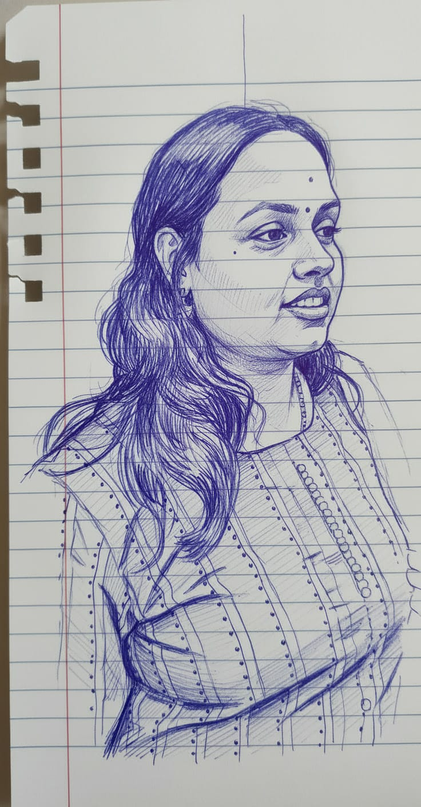

KWIX is a pocket-sized scanner that takes the guesswork out of your environment and well-being. It actively verifies the purity, freshness, and elemental safety of what you consume and inhale in seconds—giving your daily life a professional-grade protective shield at an everyday affordable price.
Our core imperative goes far beyond financial indicators: we want to eradicate adulteration and microplastics from the intake and democratize safe intake globally.
We are a highly integrated team of founders combining proven domain expertise across **embedded systems, product design, cloud compute, AI, hardware, chemical analysis, and environmental research background**. By shrinking large laboratory analytical tools into a pocket-sized mobile device, we bridge the gap between hard system architecture and proactive life protection.
Our architecture is built for continuous expansion. While launching with foundational food safety signatures, the KWIX hardware roadmap scales into a complete environmental shield—integrating advanced array extensions for air quality telemetry, EMI radiation tracking, complex smell profiling, and comprehensive particulate pollution vectors.

A serial entrepreneur deeply passionate about democratizing quality intake for everyone. She drives the localization layer of our system architecture, bringing deep expertise in localized AI-driven sentiment captures to align real-world environmental exposure with human safety metrics.
Directs hard embedded systems, multi-wavelength spectroscopy alignment, and edge compute micro-architecture. Translates heavy lab analytics into ultra-compact, low-cost consumer silicon infrastructure.
Guiding molecular tracking signatures, validation baselines, and food purity benchmarks to map out hidden contaminants.
Advising on nutrient density tracking algorithms, bio-availability scores, and dietary intake profiling strategies.
Optimizing solid-state spectral array components, micro-optics, and cross-channel sensor calibration metrics.
Directing edge matrix deployment pipelines, automated model retraining, and worldwide neural grid expansion networks.
Structuring cross-border hardware supply chains, international trade compliance, and optimizing consumer unit economics for global distribution.
An architectural abstraction showing how multi-vector environmental inputs are converted into instant, actionable consumer safety notifications.
Extracts deep chemical and composition signatures using optical reflection curves.
→ Shines safe light to analyze core intake properties.Supplies asynchronous baseline references for molecular structures, wave hazards, and air metrics.
→ Instantly cross-references ambient readings with global baselines.Designed to scale via software updates and modular arrays for air, radiation, smell, and pollution parameters.
→ Future-proof architecture built to map your entire environment.Processes incoming sensory data channels simultaneously within local micro-architecture profiles.
→ Securely runs advanced AI directly on the handheld device.Locks in precise baselines for air cleanliness, ambient waves, and pure ingredient scores.
→ Pinpoints safety anomalies to benchmark your pure survival standard.Delivers clean, actionable chemical, particulate, and hazard notifications straight to your display terminal.
→ Tells you precisely what you are breathing, touching, and absorbing.Moving from manual guesswork to un-falsifiable ambient and material tracking data.
Combines multi-wavelength spectroscopic analysis with localized ambient arrays. This approach isolates target materials perfectly, ensuring stable, reliable accuracy inside any domestic environment.
KWIX is conceptually designed to expand far beyond food. Future iterations map total wellness vectors—acting as an all-in-one tracker for air quality indexes, EMI radiation drops, olfactory smell profiles, and complex toxic pollutants.
Every element carries a distinct signature. By logging these digital baselines directly on secure storage modules, consumers can quickly spot local toxic trends, hidden allergens, or unexpected spikes in electromagnetic frequency exposure.